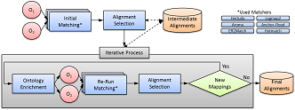

Selected Publications
You can also check out my publication entries at DBLP or Google Scholar.
Filter by type:
Sort by year:
Self-Enforcing Access Control for Encrypted RDF
Conference Paper In
Proceedings of the 14th International Conference, ESWC 2017,
Portorož, Slovenia, May 28 – June 1, 2017.
Abstract
The amount of raw data exchanged via web protocols is steadily increasing. Although the Linked Data infrastructure could potentially be used to selectively share RDF data with different individuals or organisations, the primary focus remains on the unrestricted sharing of public data. In order to extend the Linked Data paradigm to cater for closed data, there is a need to augment the existing infrastructure with robust security mechanisms. At the most basic level both access control and encryption mechanisms are required. In this paper, we propose a flexible and dynamic mechanism for securely storing and efficiently querying RDF datasets. By employing an encryption strategy based on Functional Encryption (FE) in which controlled data access does not require a trusted mediator, but is instead enforced by the cryptographic approach itself, we allow for fine-grained access control over encrypted RDF data while at the same time reducing the administrative overhead associated with access control management.
Data Integration for Open Data on the Web
Conference Paper In
Reasoning Web. Semantic Interoperability on the Web (Reasoning
Web 2017).
Abstract
In this lecture we will discuss and introduce challenges of integrating openly available Web data and how to solve them. Firstly, while we will address this topic from the viewpoint of Semantic Web research, not all data is readily available as RDF or Linked Data, so we will give an introduction to different data formats prevalent on the Web, namely, standard formats for publishing and exchanging tabular, tree-shaped, and graph data. Secondly, not all Open Data is really completely open, so we will discuss and address issues around licences, terms of usage associated with Open Data, as well as documentation of data provenance. Thirdly, we will discuss issues connected with (meta-)data quality issues associated with Open Data on the Web and how Semantic Web techniques and vocabularies can be used to describe and remedy them. Fourth, we will address issues about searchability and integration of Open Data and discuss in how far semantic search can help to overcome these. We close with briefly summarizing further issues not covered explicitly herein, such as multi-linguality, temporal aspects (archiving, evolution, temporal querying), as well as how/whether OWL and RDFS reasoning on top of integrated open data could be help.
SHAPEworks: A BPMS Extension for Complex Process Management
Workshop Paper (demo)
In Proceedings of the BPM Demo Track 2016 Co-located with the
14th International Conference on Business Process Management,
Rio de Janeiro, Brazil, September 21, 2016.
Abstract
Complex engineering projects, such as the deployment of a railway infrastructure or the installation of an interlocking system, involve human safety and make use of heterogeneous data sources, as well as customized engineering tools. These processes are currently carried out in an ad-hoc fashion, relying on the experience of experts who need to plan, control, and monitor the execution of processes for delivering value to the customers. This setting makes an automated overarching-process a crucial step towards supporting engineers and project managers to deal with safety-critical constraints and the plethora of details entailed by the process. This paper demonstrates a tool that combines methods from automatic reasoning, ontologies and process mining, implemented on top of a real Business Process Management System (BPMS).
Leveraging Semantic Web Technologies for Consistency Management in Multi-viewpoint Systems Engineering
Book Chapter Semantic Web
Technologies for Intelligent Engineering Applications 2016
ISBN: 978-3-319-41488-1
Abstract
Systems modeling is an important ingredient for engineering complex systems in potentially heterogeneous environments. One way to deal with the increasing complexity of systems is to offer several dedicated viewpoints on the system model for different stakeholders, thus providing means for system engineers to focus on particular aspects of the environment. This allows them to solve engineering tasks more efficiently, although keeping those multiple viewpoints consistent with each other (e.g., in dynamic multiuser scenarios) is not trivial. In the present chapter, we elaborate how Semantic Web technologies (SWT) may be utilized to deal with such challenges when models are represented as RDF graphs. In particular, we discuss current developments regarding a W3C Recommendation for describing structural constraints over RDF graphs called Shapes Constraint Language (SHACL) which we subsequently exploit for defining intermodel constraints to ensure consistency between different viewpoints represented as RDF graphs. Based on a running example, we illustrate how SHACL is used to define correspondences (i.e., mappings) between different RDF graphs and subsequently how those correspondences can be validated during modeling time.
If you can't enforce it, contract it: Enforceability in Policy-Driven (Linked) Data Markets
Workshop Paper (poster)
In Proceedings of the Posters and Demos Track of 11th
International Conference on Semantic Systems - SEMANTiCS 2015
Abstract
The Web of Data refers to a network of data, which is published from various data sources, distributed across different machines, and possibly interconnected as Linked (Open) Data. We assume that in the near future these machines will not only publish and consume data, but will also perform transactions in digital data markets without human intervention. For these digital data markets to succeed, it is crucial that published data is accessed and used in a manner, which is compliant with restrictions or regulations that have been defined by data publishers. While it is fairly simple to express access policies using one of the numerous vocabularies available, the actual enforcement of those policies is rather difficult especially when taking dependencies among policies into account. In this paper, we demonstrate how ODRL can be used not only to represent access policies but also to specify access requests, offers and agreements, and propose an approach to generate on-the-fly contracts that govern all explicit and implicit non-enforceable policies
Towards Formal Semantics for ODRL Policies
Conference Paper In
Proceedings of the 9th International Symposium, RuleML 2015,
Springer, 2015.
Abstract
Most policy-based access control frameworks explicitly model whether execution of certain actions (read, write, etc.) on certain assets should be permitted or denied and usually assume that such actions are disjoint from each other, i.e. there does not exist any explicit or implicit dependency between actions of the domain. This in turn means, that conflicts among rules or policies can only occur if those contradictory rules or policies constrain the same action. In the present paper - motivated by the example of ODRL 2.1 as policy expression language - we follow a different approach and shed light on possible dependencies among actions of access control policies. We propose an interpretation of the formal semantics of general ODRL policy expressions and motivate rule-based reasoning over such policy expressions taking both explicit and implicit dependencies among actions into account. Our main contributions are (i) an exploration of different kinds of ambiguities that might emerge based on explicit or implicit dependencies among actions, and (ii) a formal interpretation of the semantics of general ODRL policies based on a defined abstract syntax for ODRL which shall eventually enable to perform rule-based reasoning over a set of such policies.
On Synergies between Model Transformations and Semantic Web Technologies
Workshop Paper In 8th
International Workshop on Multi-Paradigm Modeling, Valencia,
Spain, September/October 2014
Abstract
The integration of heterogeneous data is a reoccurring problem in different technical spaces. With the rise of model-driven engineering (MDE), much effort has been spent in developing dedicated transformation languages and accompanying engines to transform, compare, and synchronize heterogeneous models. At the same time, ontologies have been proposed in the Semantic Web area as the main mean to describe the intention as well as the extension of a domain. While dedicated languages for querying and reasoning with ontologies have been intensively studied, specific support for integration concerns leading to executable transformations is rare compared to MDE.
Based on previous studies which relate metamodels and models to ontologies, we discuss in this paper synergies between transformation languages of MDE, in particular Triple Graph Grammars (TGGs), and Semantic Web technologies, specifically OWL/SPARQL. First, we show how TGGs are employed to define correspondences between ontologies and how these correspondences are operationalized in SPARQL. Second, we show how reasoning support of Semantic Web technologies is applied to allow for underspecified model transformation specifications as well as how the different assumptions on existing knowledge effect transformations. We demonstrate these aspects by a common case study.
Defining Expressive Access Policies for Linked Data using the ODRL Ontology 2.0
Conference Paper
(short) In Proceedings of the 10th International
Conference on Semantic Systems. ACM, 2014.
Abstract
Together with the latest efforts in publishing Linked (Open) Data, legal issues around publishing and consuming such data are gaining increased interest. Particular areas of interest include (i) how to define more expressive access policies which go beyond common licenses, (ii) how to introduce pricing models for online datasets (for non-open data) and (iii) how to realize (i)+(ii) while providing descriptions of respective meta data that is both human readable and machine processable. In this paper, we show based on different examples that the Open Digital Rights Language (ODRL) Ontology 2.0 is able to address all previous mentioned issues, i.e. is suitable to express a large variety of different access policies for Linked Data. By defining policies as ODRL in RDF we aim for (i) higher flexibility and simplicity in usage, (ii) machine/human readability and (iii) fine-grained policy expressions for Linked (Open) Data.
Integrating distributed configurations with RDFS and SPARQL
Workshop Paper In 16th
Workshop on Configuration, Novi Sad, Serbia, September 2014
Abstract
Large interconnected technical systems (e.g. railway networks, power grids, computer networks) are often configured with the help of multiple configurators, which store their configurations in separate databases based on heterogenous domain models (ontologies). When users want to ask queries over several distributed configurations, these domain models need to be aligned. To this end, standard mechanisms for ontology and data integration are required that enable combining query answering with reasoning about these distributed configurations. In this paper we describe our experience with using standard Semantic Web technologies (RDFS and SPARQL) in such a context.
Semantic Web Standards for Publishing and Integrating Open Data
Book Chapter IGI Global |
June, 2014 | ISBN-10: 1466662360

Abstract
The World Wide Web Consortium (W3C) as the main standardization body for Web standards has set a particular focus on publishing and integrating Open Data. In this article we will explain various standards from the W3C's Semantic Web activity and the - potential - role they play in the context of Open Data: RDF, as a standard data format for publishing and consuming structured information on the Web; the Linked Data principles for interlinking RDF data published across the Web and leveraging a Web of Data; RDFS & OWL to describe vocabularies used in RDF and for describing mappings between such vocabularies. We conclude with a review of current deployments of these standards on the Web, particularly within public Open Data initiatives, and discuss future potential, risks, and challenges.
Mix'n'Match: iteratively combining ontology matchers in an anytime fashion
Workshop Paper (poster)
In Proceedings of the 8th International Workshop on Ontology
Matching co-located with the 12th International Semantic Web
Conference (ISWC 2013), Sydney, Australia, October 21, 2013

The Mix’n’Match Framework
Mix’n’Match is a framework to combine different ontology matchers in an iterative fashion for improved combined results: starting from an empty set of alignments, we aim at iteratively supporting in each round, matchers with the combined results of other matchers found in previous rounds, aggregating the results of a heterogeneous set of ontology matchers.
Mix'n'Match: An Alternative Approach for Combining Ontology Matchers
Conference Paper
(short) On the Move to Meaningful Internet Systems:
OTM 2013 Conferences (pp. 555-563). Springer Berlin Heidelberg.
Abstract
The existence of a standardized ontology alignment format promoted by the Ontology Alignment Evaluation Initiative (OAEI) potentially enables different ontology matchers to be combined and used together. Along these lines, we present a novel architecture for combining ontology matchers based on iterative calls of off-the-shelf matchers that exchange information in the form of reference mappings in this standard alignment format. However, we argue that only a few of the matchers contesting in the past years’ OAEI campaigns actually allow the provision of reference alignments to support the matching process. We bypass this lacking functionality by introducing an alternative approach for aligning results of different ontology matchers using simple URI replacement in the aligned ontologies. We experimentally prove that our iterative approach benefits from this emulation of reference alignments.